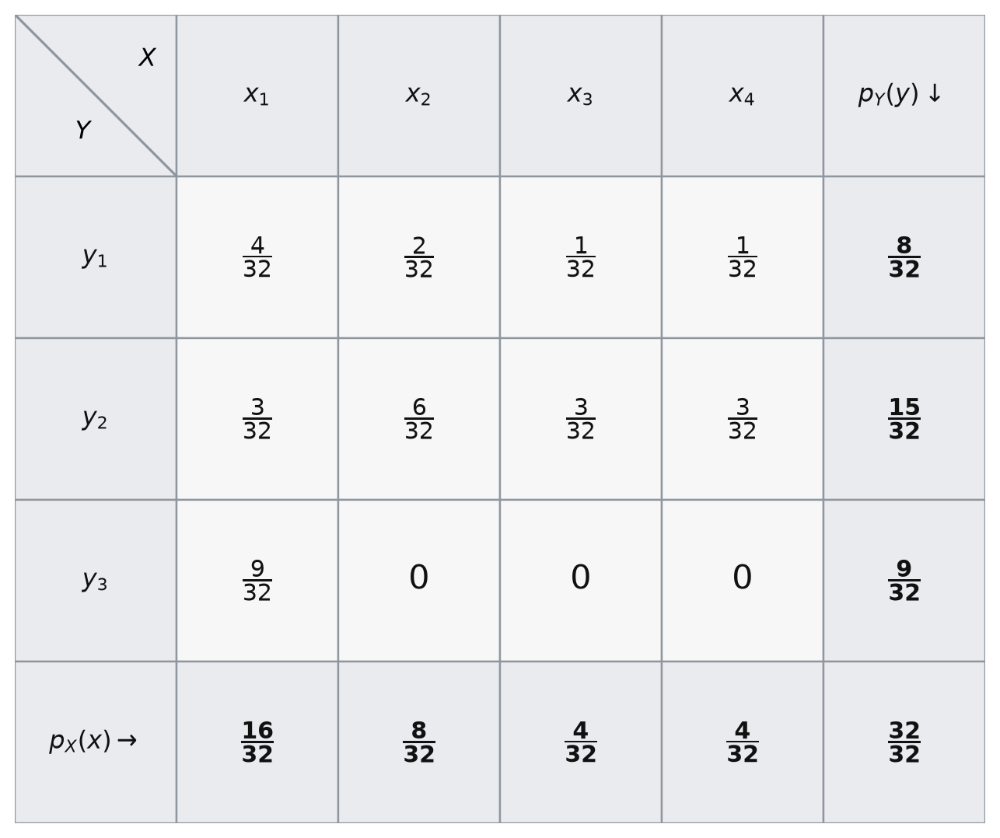
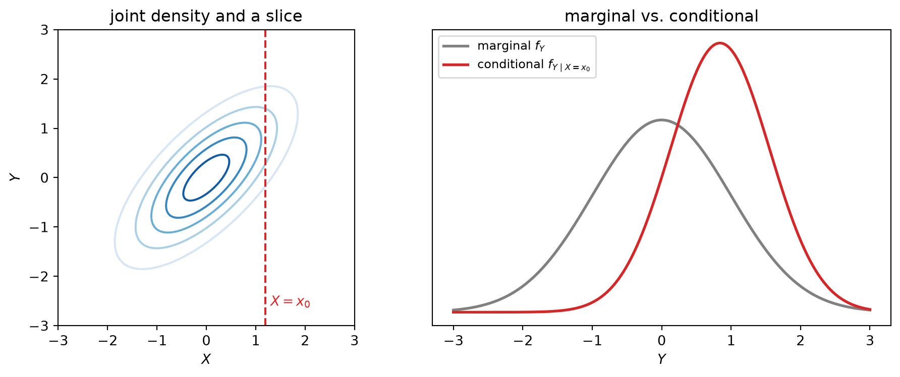
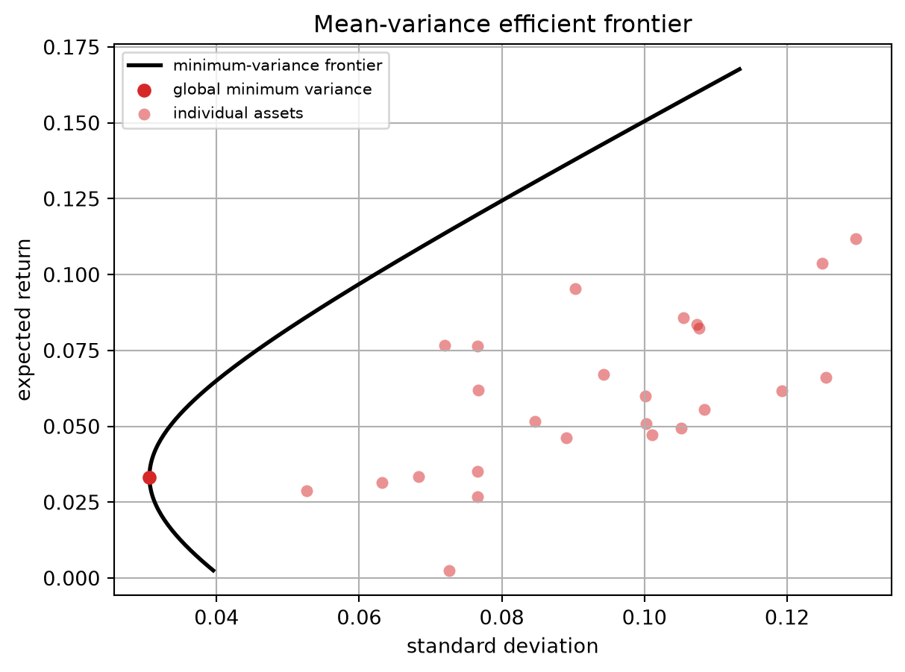
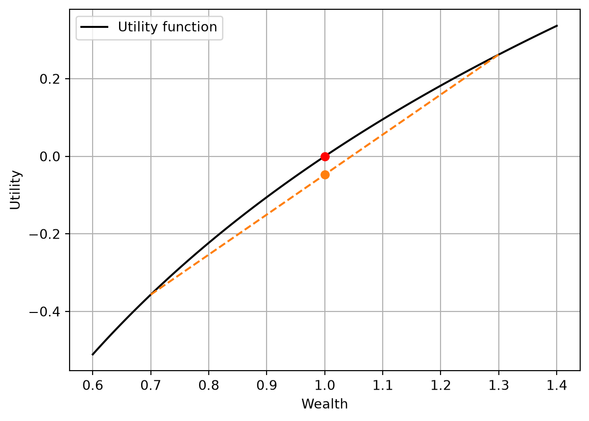

5 Distributions, Expectation, and Dependence
Chapter 4 built the law of a single random variable — its distribution \(\mu_X\), its CDF, its mass or density. Finance, though, is never about one quantity in isolation: a portfolio holds many assets, a factor model relates a stock to the market, a risk report asks how losses in one book move with another. We therefore need the joint behavior of several random variables at once, and the summaries — expectation, variance, covariance — that compress it into usable numbers. This chapter develops both, in that order: first the distributions, then the moments read off them.
5.1 Joint, marginal, and conditional distributions
Fix two random variables \(X\) and \(Y\) on the same probability space \((\Omega, \mathcal{F}, \mathbb{P})\). Because they are defined on the same \(\Omega\), each outcome \(\omega\) produces a pair \((X(\omega), Y(\omega))\), a point in the plane \(\mathbb{R}^2\). The pair \((X, Y)\) is a random vector, and its distribution lives on \(\mathbb{R}^2\). To be clear, \(\Omega\) is not necessarily one-dimensional: it could be two-dimensional too. For example, \(\Omega\) could be the unit square \([0,1]^2\), with \(\omega = (\omega_1, \omega_2)\), and we could define \(X(\omega) = \omega_1\) and \(Y(\omega) = \omega_2\).
The joint distribution answers every question about \(X\) and \(Y\) together: the probability that they land in any region of the plane.
Definition 5.1 The joint CDF of \((X, Y)\) is \[ F(x, y) = \mathbb{P}(X \le x,\ Y \le y). \] The pair is jointly discrete if it takes values in a countable set, described by the joint PMF \[ p(x, y) = \mathbb{P}(X = x,\ Y = y), \qquad \sum_{x}\sum_{y} p(x,y) = 1, \] and jointly continuous if there is a joint PDF \(f(x,y) \ge 0\) with \[ \mathbb{P}\big((X,Y) \in A\big) = \iint_{A} f(x,y)\, dx\, dy, \qquad \iint_{\mathbb{R}^2} f = 1 . \]
Marginal distribution
Sometimes we hold the joint distribution but care about only one variable. Recovering its distribution means summing over the other.
Definition 5.2 The marginal distribution of \(X\) is obtained by summing or integrating the joint over all values of \(Y\): \[ p_X(x) = \sum_{y} p(x, y) \quad\text{(discrete)}, \qquad f_X(x) = \int_{-\infty}^{\infty} f(x, y)\, dy \quad\text{(continuous)}, \] and symmetrically for \(Y\).
Example 5.1 The table below shows a joint PMF of two discrete random variables \(X\) and \(Y\). The four inner cells are the joint probabilities \(p(x, y)\); the rightmost column and bottom row are the marginals \(p_Y(y)\) and \(p_X(x)\), obtained by summing each row and column. The total probability is \(1\).
However, by looking at the table, one may also ask the following question: Given that \(X = x_1\), what is the probability that \(Y = y_1\)? This is the conditional distribution of \(Y\) given \(X = x_1\), which is obtained by slicing the joint PMF at \(X = x_1\) and renormalizing so that the slice sums to one. Therefore, intuitively, given \(X = x_1\), the conditional probability of \(Y = y_1\) is \(4/32\) divided by \(16/32\), equal to \(1/4\). We can formalize this as follows.
Definition 5.3 For \(x\) with \(p_X(x) > 0\) (discrete) or \(f_X(x) > 0\) (continuous), the conditional distribution of \(Y\) given \(X = x\) is \[ p_{Y \mid X}(y \mid x) = \frac{p(x, y)}{p_X(x)}, \qquad f_{Y \mid X}(y \mid x) = \frac{f(x, y)}{f_X(x)} . \]
You can also see the above definition from Definition 4.4. In discrete cases, set \[ A=\{\omega\in\Omega:Y(\omega)=y\},\qquad B=\{\omega\in\Omega:X(\omega)=x\}, \] \[ A\cap B=\{\omega\in\Omega:X(\omega)=x,Y(\omega)=y\}. \] Then \[ \mathbb{P}(A\mid B)=\frac{\mathbb{P}(A\cap B)}{\mathbb{P}(B)}=\frac{\mathbb{P}(X=x,Y=y)}{\mathbb{P}(X=x)}=\frac{p(x,y)}{p_X(x)}=p_{Y\mid X}(y\mid x). \] The continuous case is similar, but a bit more subtle, so we skip the details. Reading the identity backward gives the decomposition we lean on constantly, \[ f(x, y) = f_{Y \mid X}(y \mid x)\, f_X(x), \tag{5.1}\] “joint = conditional \(\times\) marginal.”
Independence
The extreme case is when conditioning changes nothing — learning \(X\) tells us nothing about \(Y\).
Definition 5.4 \(X\) and \(Y\) are independent if the joint factors into the marginals, \[ f(x, y) = f_X(x)\, f_Y(y) \qquad\text{for all } x, y, \] or equivalently, \[ f_{Y \mid X}(y \mid x) = f_Y(y) \]
Similarly, one can see the definition of independence from Definition 4.5. Again, the discrete case is straightforward: \(X\) and \(Y\) are independent if and only if for all \(x\) and \(y\), \[ \mathbb{P}(X=x,Y=y)=\mathbb{P}(X=x)\,\mathbb{P}(Y=y), \quad\text{or equivalently,}\quad \mathbb{P}(Y=y\mid X=x)=\mathbb{P}(Y=y). \]
The figure below takes a jointly normal \((X, Y)\) with correlation \(0.7\): the left panel shows the joint density with a slice at \(X = x_0\), and the right panel shows that the conditional \(f_{Y\mid X=x_0}\) is shifted (toward positive \(Y\), since the two are positively related) and narrower (conditioning removes uncertainty) than the marginal \(f_Y\).
Code
import numpy as np
import matplotlib.pyplot as plt
from scipy import stats
rho, x0 = 0.7, 1.2
Sigma = np.array([[1.0, rho], [rho, 1.0]])
rv = stats.multivariate_normal(mean=[0, 0], cov=Sigma)
g = np.linspace(-3, 3, 240)
XX, YY = np.meshgrid(g, g)
Z = rv.pdf(np.dstack([XX, YY]))
fig, (axL, axR) = plt.subplots(1, 2, figsize=(10, 4))
# left: joint density with the conditioning slice X = x0
axL.contour(XX, YY, Z, levels=6, cmap="Blues")
axL.axvline(x0, color="tab:red", ls="--", lw=1.5)
axL.text(x0 + 0.1, -2.6, r"$X=x_0$", color="tab:red")
axL.set_xlabel(r"$X$"); axL.set_ylabel(r"$Y$"); axL.set_aspect("equal")
axL.set_title("joint density and a slice")
# right: marginal of Y vs conditional of Y given X = x0
y = np.linspace(-3, 3, 300)
axR.plot(y, stats.norm.pdf(y), color="0.5", lw=2, label=r"marginal $f_Y$")
cond_mean, cond_sd = rho * x0, np.sqrt(1 - rho**2)
axR.plot(y, stats.norm.pdf(y, cond_mean, cond_sd), color="tab:red", lw=2,
label=r"conditional $f_{Y\mid X=x_0}$")
axR.set_xlabel(r"$Y$"); axR.set_yticks([])
axR.legend(fontsize=9); axR.set_title("marginal vs. conditional")
fig.tight_layout()
plt.show()
5.2 Moments
Definition 5.5 The expectation of \(X\) is its probability-weighted average value, \[ \mathbb{E}[X] = \sum_x x\, p_X(x) \quad\text{(discrete)}, \qquad \mathbb{E}[X] = \int_{-\infty}^\infty x\, f_X(x)\, dx \quad\text{(continuous)} . \]
Formally, expectation is a single object — the Lebesgue integral \(\int_\Omega X(\omega)\, d\mathbb{P}(\omega)\) — that the two formulas above specialize; the formal definition of the Lebesgue integral is beyond the math camp and unnecessary for computation. Intuitively, you could just think of \(d\mathbb{P}(\omega)\) as a weight on each outcome \(\omega\), and the integral as a weighted average of \(X(\omega)\) over all outcomes.
Below are some properties of expectation that we will use constantly:
Linearity: For any random variables \(X\) and \(Y\) and constants \(a\), \(b\), and \(c\), \[ \mathbb{E}[aX + bY + c] = a\,\mathbb{E}[X] + b\,\mathbb{E}[Y] + c. \] Similarly, for a random vector \(\boldsymbol{X} = [X_1, \dots, X_k]^\top\) and a constant vector \(\boldsymbol{w} = [w_1, \dots, w_k]^\top\), \[ \mathbb{E}[\boldsymbol{w}^\top \boldsymbol{X}] = \mathbb{E}[\sum_{i=1}^k w_i\, X_i] = \sum_{i=1}^k w_i\, \mathbb{E}[X_i] = \boldsymbol{w}^\top \mathbb{E}[\boldsymbol{X}]. \] For a constant matrix \({\boldsymbol{A} = \begin{bmatrix} -- & \boldsymbol{a}_{1}^\top & -- \\ \vdots & \vdots & \vdots \\ -- & \boldsymbol{a}_{k}^\top & --\end{bmatrix}}\) \[ \mathbb{E}[\boldsymbol{A}\boldsymbol{X}] = \mathbb{E} \begin{bmatrix} \boldsymbol{a}_1^\top \boldsymbol{X} \\ \vdots \\ \boldsymbol{a}_k^\top \boldsymbol{X} \end{bmatrix} = \boldsymbol{A}\,\mathbb{E}[\boldsymbol{X}]. \] The linearity of expectation also holds for matrices of random variables: \[ \mathbb{E}[\boldsymbol{A}\boldsymbol{X}\boldsymbol{X}^\top\boldsymbol{B}] = \boldsymbol{A}\,\mathbb{E}[\boldsymbol{X}\boldsymbol{X}^\top]\,\boldsymbol{B}. \] where \(\boldsymbol{A}\) and \(\boldsymbol{B}\) are constant matrices of appropriate dimensions, and \(\boldsymbol{X}\) is a random vector, so \(\boldsymbol{X} \boldsymbol{X}^\top\) is a matrix. Law of the unconscious statistician (LOTUS): The expectation of a function \(g(X)\) is the average of \(g\) under the distribution of \(X\), \[ \mathbb{E}[g(X)] = \sum_x g(x)\, p_X(x) \quad\text{or}\quad \int_{-\infty}^\infty g(x)\, f_X(x)\, dx, \tag{5.2}\] and, for a function of two variables against the joint, \(\mathbb{E}[g(X,Y)] = \iint g(x,y)\, f(x,y)\, dx\, dy\).
Lastly, we state a fundamental inequality that will be useful in many applications. ::: {#thm-jensen-inequality} Jensen’s Inequality: For a convex function \(g\) and a random variable \(X\), \[ g(\mathbb{E}[X]) \leq \mathbb{E}[g(X)]. \] ::: Similarly, for a concave function \(g\), the inequality is reversed: \[ g(\mathbb{E}[X]) \geq \mathbb{E}[g(X)]. \] You will see Jensen’s inequality in many financial theories. Let’s firstly prove it and then give an example. For simplicity, let’s assume that \(g\) is differentiable. Let \(\mu=\mathbb{E}[X]\). For a convex function \(g\), the tangent line at \(\mu\) lies below the graph, so for every \(x\) \[ g(x)\ge g(\mu)+g'(\mu)(x-\mu). \] Now plug in the random variable \(X\): \[ g(X)\ge g(\mu)+g'(\mu)(X-\mu). \] Take expectations on both sides: \[ \mathbb{E}[g(X)] \ge \mathbb{E}[g(\mu)+g'(\mu)(X-\mu)]. \] Since \(g(\mu)\) and \(g'(\mu)\) are constants, \[ \mathbb{E}[g(X)] \ge g(\mu)+g'(\mu)\big(\mathbb{E}[X]-\mu\big). \] Because \(\mu=\mathbb{E}[X]\), the last term is zero, hence \[ \mathbb{E}[g(X)] \ge g(\mu)=g(\mathbb{E}[X]). \]
Code
import numpy as np
import matplotlib.pyplot as plt
fig, axs = plt.subplots(1, 1, figsize=(4, 4))
# axs[0]: convex function and tangent line
# Define a convex function
def g(x):
return x**2
def g_prime(x):
return 2*x
# Generate some data
x = np.linspace(0, 2, 100)
y = g(x)
mu = 1
# tangent line at mu
def tangent_line(x):
return g(mu) + g_prime(mu) * (x - mu)
axs.plot(x, y, label=r"$g(x)$")
axs.plot(x, tangent_line(x), label=r"$g(\mu) + g'(\mu)(x - \mu)$", linestyle='--')
axs.scatter(mu, g(mu), color='red', zorder=5)
# hide ticks
axs.set_xticks([])
axs.set_yticks([])
axs.legend()
plt.show()
Example 5.2 In finance and economics, we often assume investors make decisions to maximize their expected utility. Generally, investors are risk-averse. This is captured by a concave utility function \(U\) and its expectation, such as \[ \mathbb{E}[U(W)] = \mathbb{E}[\log(W)], \] where \(W\) is wealth. Suppose an investor has a choice between two investments:
- A risk-free investment that guarantees a return of $1.
- A risky investment that has a 50% chance of returning $0.7 and a 50% chance of returning $1.3.
We can see the expected payoff of the risky investment: \(0.5 \times 0.7 + 0.5 \times 1.3 = 1.\) However, the expected utility of the risky investment is \[ \mathbb{E}[\log(W)] = 0.5 \log(0.7) + 0.5 \log(1.3) < \log(1). \]
Code
import numpy as np
import matplotlib.pyplot as plt
# plot the utility function
def U(W):
return np.log(W)
d = 0.7
u = 1.3
W = np.linspace(0.6, 1.4, 100)
plt.plot(W, U(W), label="Utility function", color='black')
plt.scatter([1], [U(1)], color='red', zorder=5)
plt.scatter([1], [0.5*U(d)+0.5*U(u)], color='tab:orange', zorder=5)
plt.plot([d, u], [U(d), U(u)], color='tab:orange', linestyle='--')
plt.xlabel("Wealth")
plt.ylabel("Utility")
plt.legend()
plt.grid()
plt.show()
Definition 5.6 The variance of \(X\) is \[ \operatorname{Var}(X) = \mathbb{E}\!\big[(X - \mathbb{E}[X])^2\big] = \mathbb{E}[X^2] - (\mathbb{E}[X])^2, \] and the standard deviation is \(\operatorname{std}(X) = \sqrt{\operatorname{Var}(X)}\), in the same units as \(X\).
Variance is not linear: \[ \operatorname{Var}(aX + b) = a^2 \operatorname{Var}(X) \] We can check the above by definition: \[ \operatorname{Var}(aX + b) = \mathbb{E}[(aX + b)^2] - (\mathbb{E}[aX + b])^2 = a^2 \mathbb{E}[X^2] + 2ab \mathbb{E}[X] + b^2 - (a\mathbb{E}[X] + b)^2 = a^2 \operatorname{Var}(X) . \] We will see that variance can be interpreted as a special case of covariance.
Definition 5.7 The covariance of \(X\) and \(Y\) is \[ \operatorname{Cov}(X, Y) = \mathbb{E}\big[(X - \mathbb{E}[X])(Y - \mathbb{E}[Y])\big] = \mathbb{E}[XY] - \mathbb{E}[X]\,\mathbb{E}[Y] , \]
Covariance is positive when the variables tend to be on the same side of their means together, negative when they trade off. Recall, when we introduced the inner product in Chapter 1, we mentioned a broader definition. In probability, the inner product is \(\langle X, Y \rangle = \mathbb{E}[XY]\), and covariance is the inner product of the centered variables \(X - \mathbb{E}[X]\) and \(Y - \mathbb{E}[Y]\). Geometrically, inner products measure the angle between two vectors, and covariance measures the angle between two random variables. If the angle is acute, the covariance is positive; if obtuse, negative; if perpendicular, zero. The same properties of inner products carry over to \(\mathbb{E}[XY]\) and \(\operatorname{Cov}(X, Y)\):
- \(\operatorname{Cov}(X, Y) = \operatorname{Cov}(Y, X)\).
- \(\operatorname{Cov}(aX + bY, Z) = a\,\operatorname{Cov}(X, Z) + b\,\operatorname{Cov}(Y, Z)\).
As we mentioned that variance is a special case of covariance, we can see that \(\operatorname{Var}(X) = \operatorname{Cov}(X, X)\). Therefore, using the properties of covariance, we can also see that \[ \operatorname{Var}(aX) = \operatorname{Cov}(aX, aX) = a^2 \operatorname{Cov}(X, X) = a^2 \operatorname{Var}(X) . \]
Example 5.3 Compute \(\operatorname{Var}(aX + bY)\). \[ \begin{aligned} \operatorname{Var}(aX + bY) &= \operatorname{Cov}(aX + bY, aX + bY) \\ &= \operatorname{Cov}(aX, aX + bY) + \operatorname{Cov}(bY, aX + bY) \quad \text{by rule 2} \\ &= \operatorname{Cov}(aX+bY, aX) + \operatorname{Cov}(aX+bY, bY) \quad \text{by rule 1}\\ &= \operatorname{Cov}(aX, aX) + \operatorname{Cov}(bY, aX) + \operatorname{Cov}(aX, bY) + \operatorname{Cov}(bY, bY) \quad \text{by rule 2}\\ &= a^2\operatorname{Var}(X) + 2ab\operatorname{Cov}(X, Y) + b^2\operatorname{Var}(Y) . \end{aligned} \]
Example 5.4 Compute \(\operatorname{Var}(\sum_{i=1}^N a_i X_i)\). \[ \begin{aligned} \operatorname{Var}\Big(\sum_{i=1}^N a_i X_i\Big) &= \operatorname{Cov}\Big(\sum_{i=1}^N a_i X_i, \sum_{j=1}^N a_j X_j\Big) \\ &= \sum_{i=1}^N \sum_{j=1}^N a_i a_j \operatorname{Cov}(X_i, X_j) \end{aligned} \]
Definition 5.8 For a random vector \(\boldsymbol{X} = (X_1, \dots, X_k)\) with \(\boldsymbol{\mu} = \mathbb{E}[\boldsymbol{X}]\), the covariance matrix is \[ \boldsymbol{\Sigma} = \operatorname{Cov}(\boldsymbol{X}) = \mathbb{E}\big[(\boldsymbol{X} - \boldsymbol{\mu})(\boldsymbol{X} - \boldsymbol{\mu})^\top\big], \qquad \Sigma_{ij} = \operatorname{Cov}(X_i, X_j) . \] Its diagonal holds the variances, its off-diagonal the covariances; it is symmetric.
Theorem 5.1 The covariance matrix \(\boldsymbol{\Sigma}\) is positive semidefinite: \(\boldsymbol{w}^\top \boldsymbol{\Sigma}\, \boldsymbol{w} \ge 0\) for every \(\boldsymbol{w}\).
The proof is immediate from Example 5.4: \(\operatorname{Var}(\boldsymbol{w}^\top \boldsymbol{X}) = \boldsymbol{w}^\top \boldsymbol{\Sigma}\, \boldsymbol{w}\), and variance is nonnegative.
5.3 Conditional expectation
We now combine the two halves of the chapter: the conditional distribution of Definition 5.3 and the expectation of Definition 5.5. Averaging \(Y\) under its conditional distribution gives the best forecast of \(Y\) once \(X\) is known — and it closes the loop with least squares.
Definition 5.9 The conditional expectation of \(Y\) given \(X = x\) averages \(Y\) under the conditional distribution, \[ \mathbb{E}[Y \mid X = x] = \int y\, f_{Y \mid X}(y \mid x)\, dy . \]
Note that \(\mathbb{E}[Y \mid X = x]\) is not a number but a function of \(x\). It is the best prediction of \(Y\) given \(X = x\).
Letting \(x\) vary (remove “\(=x\)” from the expression), \(\mathbb{E}[Y \mid X]\) is itself a random variable — a function of \(X\). One natural question is: what is the expectation of that random variable? Formally, what is \[ \mathbb{E}\big[\mathbb{E}[Y \mid X]\big] \] To answer this question, we first need to be clear about the meaning of \(\mathbb{E}[Y \mid X]\). It is a random variable that depends on \(X\), so we should express it as a function of \(X\), and then take the expectation of that function. So, the first step is \[ \mathbb{E}_X\big[\mathbb{E}_Y[Y \mid X]\big] = \int \mathbb{E}[Y \mid X = x] f_X(x) dx \] where we use subscripts \(X\) or \(Y\) to remind ourselves that the expectation is taken with respect to the distribution of \(X\) or \(Y\), respectively. Then, we plug in the Definition 7.3 to get \[ \mathbb{E}_X\big[\mathbb{E}_Y[Y \mid X]\big] = \int \int y f_{Y \mid X}(y \mid x) dy f_X(x) dx \] Rearranging the order of integration and using the Definition 5.3, we have \[ \mathbb{E}_X\big[\mathbb{E}_Y[Y \mid X]\big] = \int \int y f_{Y \mid X}(y \mid x) f_X(x) dx dy = \mathbb{E}[Y] \] The result is the law of iterated expectations.
Theorem 5.2 (Law of iterated expectations (tower property)) \[ \mathbb{E}\big[\mathbb{E}[Y \mid X]\big] = \mathbb{E}[Y] . \] More generally, conditioning on less information averages out the more refined conditional: \(\mathbb{E}[\mathbb{E}[Y \mid X, Z] \mid X] = \mathbb{E}[Y \mid X]\).